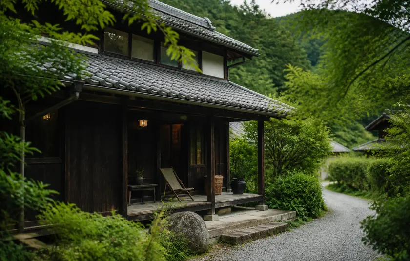
蕗原の家
熾から徒歩3分。土間に囲炉裏のある一軒を
まるごとお貸しします。庭で焚き火ができて、
朝は霧の棚田が見えます。
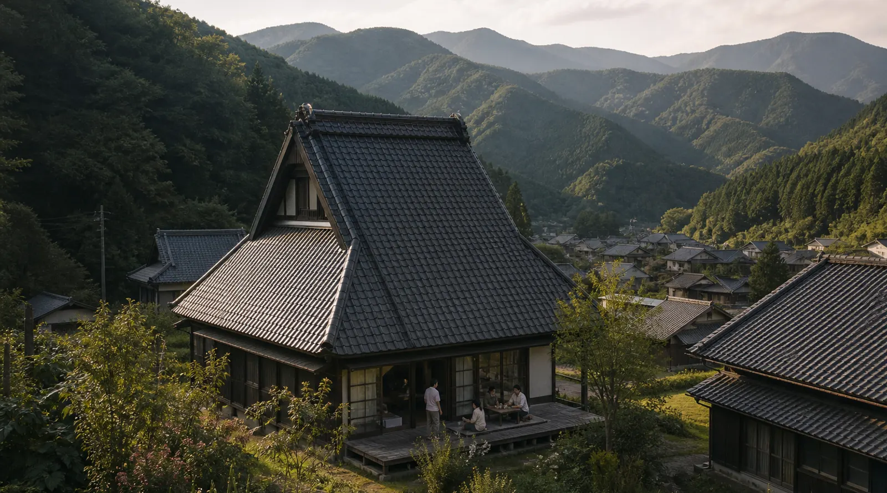
郡上の山あいに、戸数二十ほどの小さな集落があります。
棚田と細い水路のあいだ、いちばん奥まったところに熾はあります。
築120年の農家をひらいてつくった、湯屋のような貸切のサウナ。
土間のにおいと、屋根を打つ雨の音。どこか懐かしい場所です。
過ごし方は決めていません。汗をかいたら川へ、冷えたら囲炉裏へ。
連れ立って来ても、ひとりで来ても。しゃべってもだまっていても。
気づけばうとうとしている。そういう三時間が、ここにはあります。
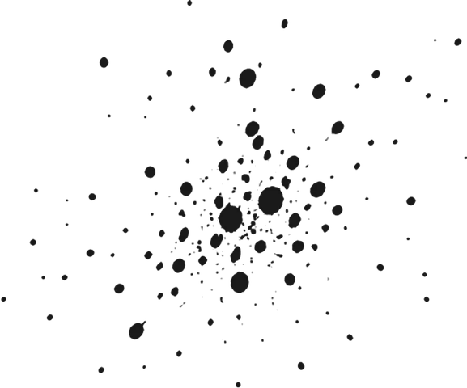
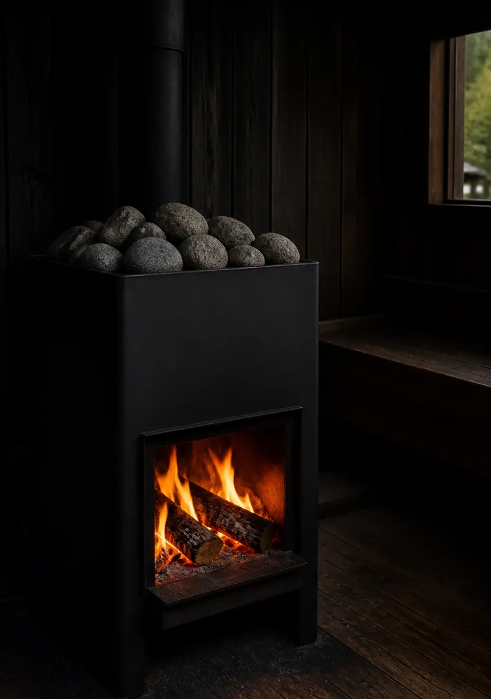
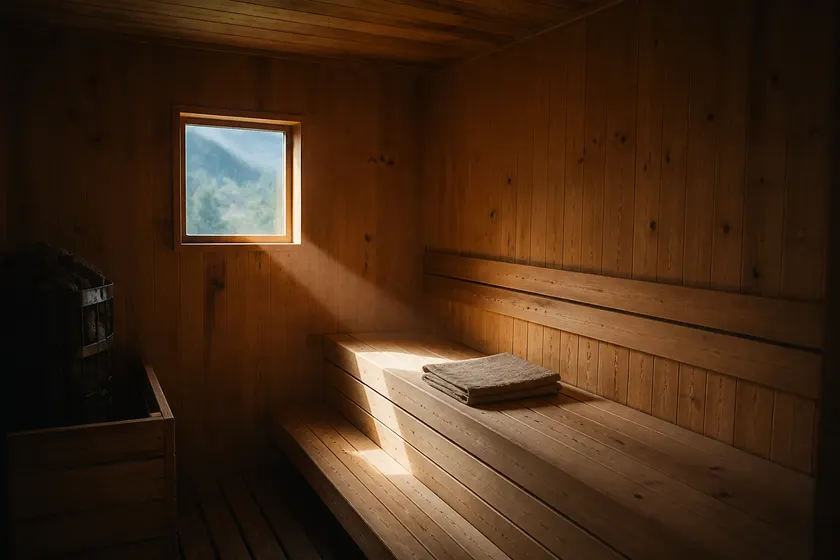
〔 ほどける 〕
薄暗い室内に、小さな窓から光がひとすじ。
八十度をすこし超えたくらいの、やわらかい熱です。
ロウリュのあとは扉をあけて、そのまま川へ。
熱いも寒いも、この土地の天気にまかせています。
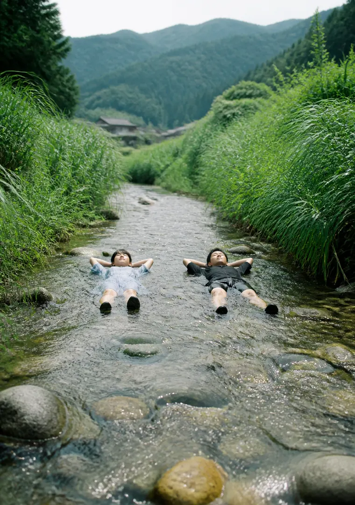
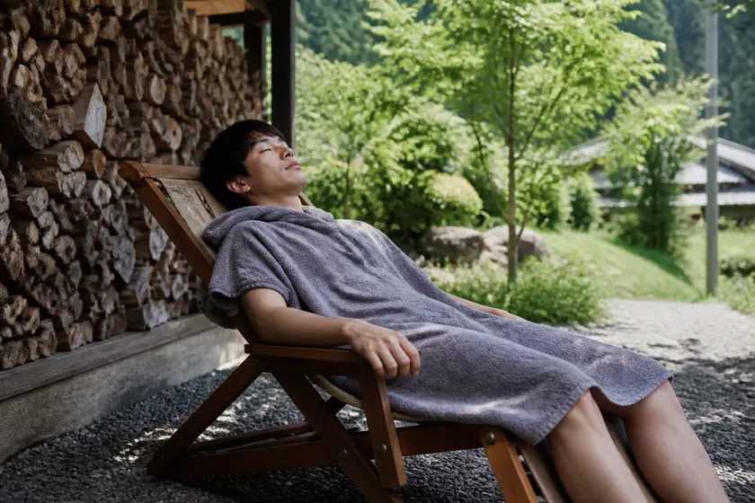
目の前を流れる浅い瀬に、そのまま身をあずける。
夏はぬるく、秋は骨までひやりとします。
寝転ぶ椅子は五脚。空を見ているうちに、
鳥の声と水の音しか聞こえなくなります。
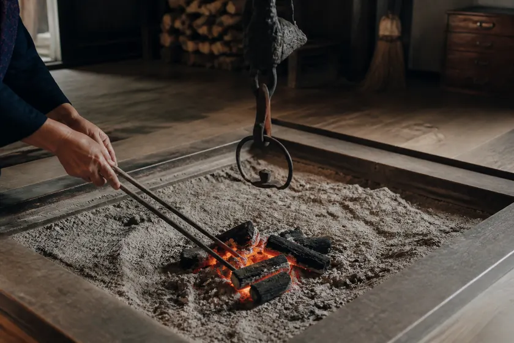
土間の囲炉裏には、いつも炭を絶やしていません。
網にのせて、焦げるまで待つだけの時間。
手ぶらで来て、そのまま食べて帰れます。
冷えた体があたたまるころには、もう夕方です。
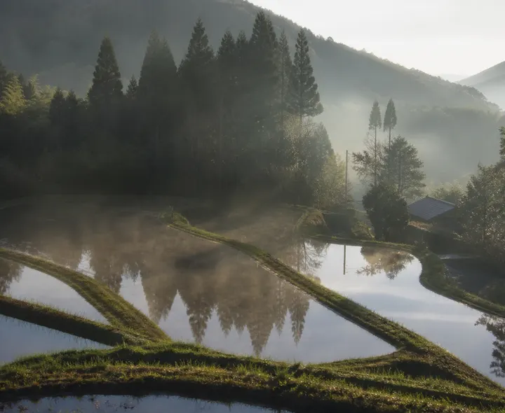
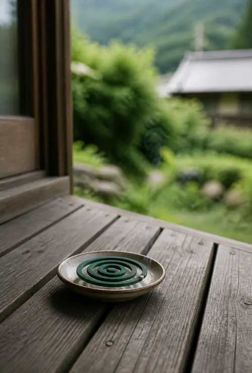
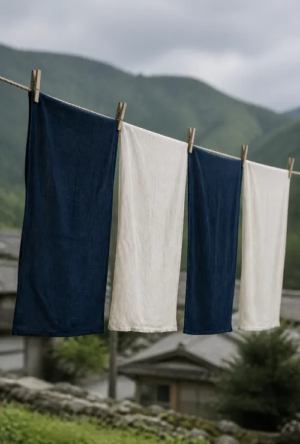
サウナを口実に、人が集まればいい。
そんな気持ちで熾をはじめました。
蕗原という集落のことや、月に一度の
朝市のことを書いています。
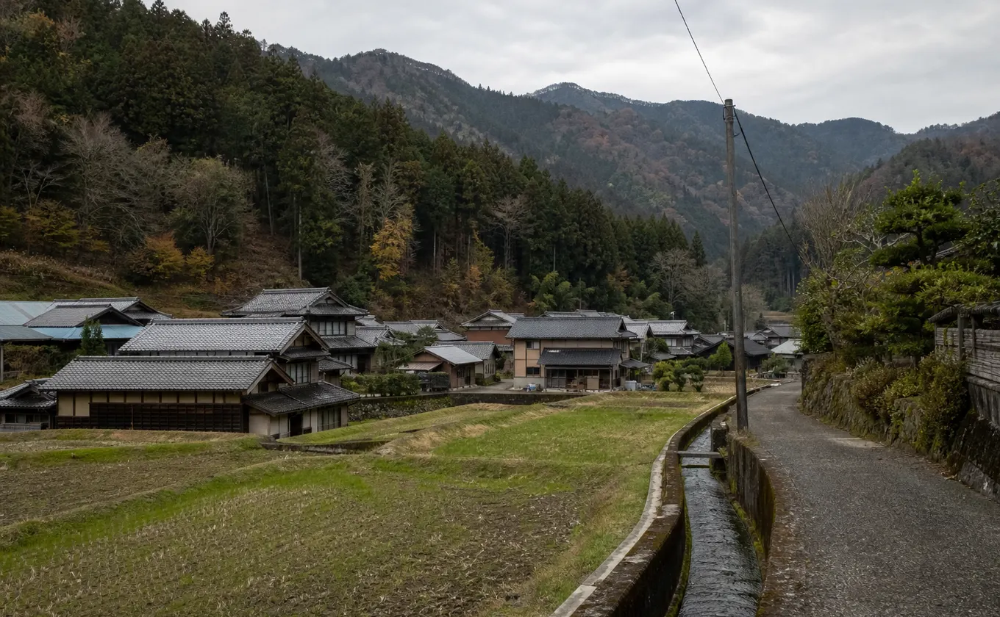
一枠まるごとお貸しするので、敷地で顔を合わせるのはお連れの方だけ。
着替えは水着でも、濡れてよい服装でもかまいません。
夏は瀬あそび、秋は焚き火。犬は土間とデッキまで一緒に上がれます。
三時間を、好きなように。
3時間制
3時間制
| 人数 | 1枠の貸切料金 | お一人あたり |
|---|---|---|
| 1人 | ¥15,000 | ¥15,000 |
| 2人 | ¥15,000 | ¥7,500 |
| 3人 | ¥18,000 | ¥6,000 |
| 4人 | ¥21,500 | ¥5,375 |
| 5人 | ¥24,500 | ¥4,900 |
| 6人 | ¥28,000 | ¥4,666 |
| 人数 | 1枠の貸切料金 | お一人あたり |
|---|---|---|
| 1人 | ¥17,000 | ¥17,000 |
| 2人 | ¥17,000 | ¥8,500 |
| 3人 | ¥20,000 | ¥6,666 |
| 4人 | ¥23,500 | ¥5,875 |
| 5人 | ¥27,000 | ¥5,400 |
| 6人 | ¥29,400 | ¥4,900 |
税込価格
12月から3月の枠には、薪ストーブの薪代がふくまれます。
小屋と瀬と土間の三つを、行ったり来たりするだけの場所です。
道具はひととおりそろえてあるので、手ぶらでお越しください。
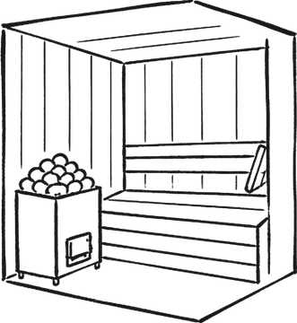
Sauna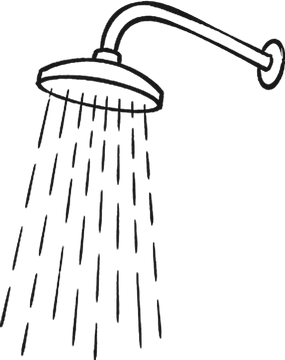
Shower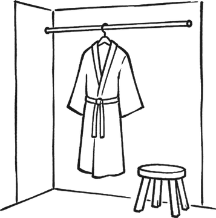
Changing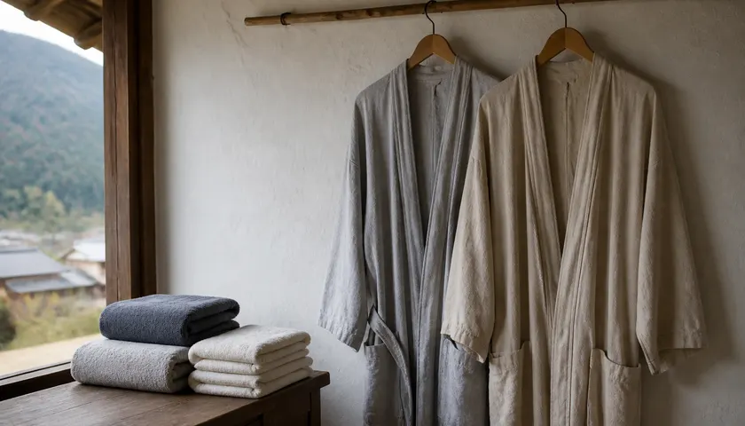
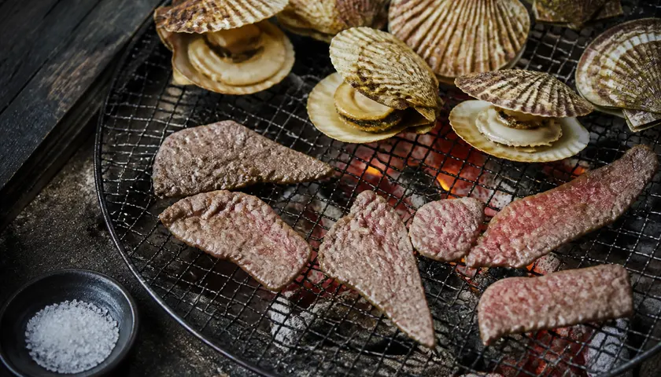
近くの二軒と組んで、泊まりとセットにした枠もつくりました。
日が落ちてからの谷は、昼とまったく違う音がします。

熾から徒歩3分。土間に囲炉裏のある一軒を
まるごとお貸しします。庭で焚き火ができて、
朝は霧の棚田が見えます。
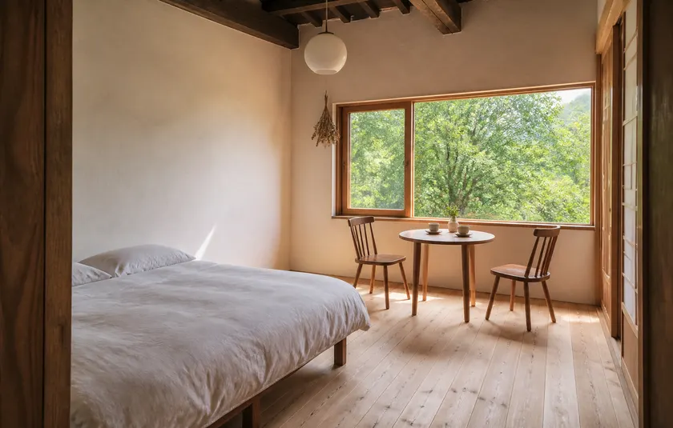
熾から車で12分。お泊まりの方は、宿との
あいだを送り迎えします。夕食を囲炉裏メシに
替えることもできます。
タトゥーがあっても
入れますか？
一枠まるごとの貸切ですので、制限は
もうけていません。そのままどうぞ。
男女で一緒に
入れますか？
水着か、濡れてよい服のまま
お入りいただくつくりです。ご家族も
ご友人も、分かれずに過ごせます。
水風呂はどこですか？
ありません。小屋を出て五歩の瀬が、
そのかわりです。夏はぬるく、秋は
骨までひやりとします。水量と天気を
見て、入るかどうかはご自身で決めて
ください。雨で濁った日は閉めます。
小さな子どもも
入れますか？
どうぞお連れください。貸切ですので、
泣いても走っても、気にする相手が
いません。ベビーベッドを土間に出せます
ので、ご予約のときにお知らせください。
※5歳から小学生までのお子様は、大人の方と
ご一緒に小屋へお入りください。
支払いには何が
使えますか？
現金のほか、カードと主なQR決済が
お使いいただけます。
バスでも
行けますか？
蕗原口のバス停から歩くと、25分ほどの
のぼり坂になります。車でお越しいただく
のが確実です。砂利の駐車場が5台分
あります。組んでいる二軒にお泊まりの方
は、宿とのあいだを送り迎えします。
※送り迎えは日曜をのぞく、一の枠と二の枠
だけとなります。
予定が変わったら
どうなりますか？
日にちに応じて頂戴します。
※日にちの振り替えも、同じ期間のうちは同じ
扱いになります。
飲みものは
持ち込めますか？
お茶やジュースはお持ちください。
お酒だけは、瀬に入る方がいるため
おことわりしています。